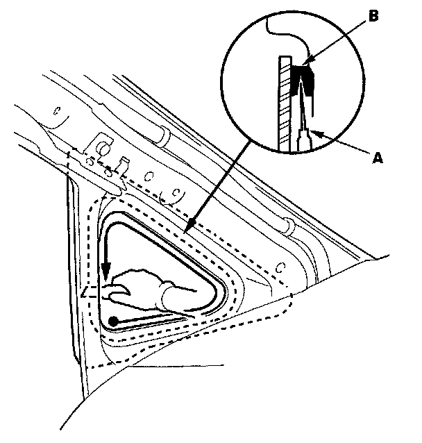
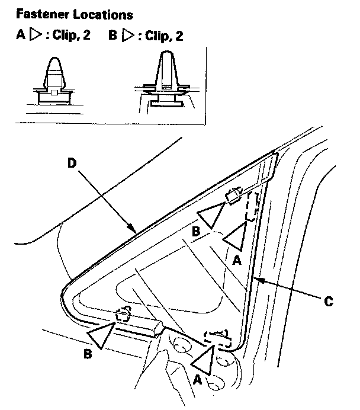
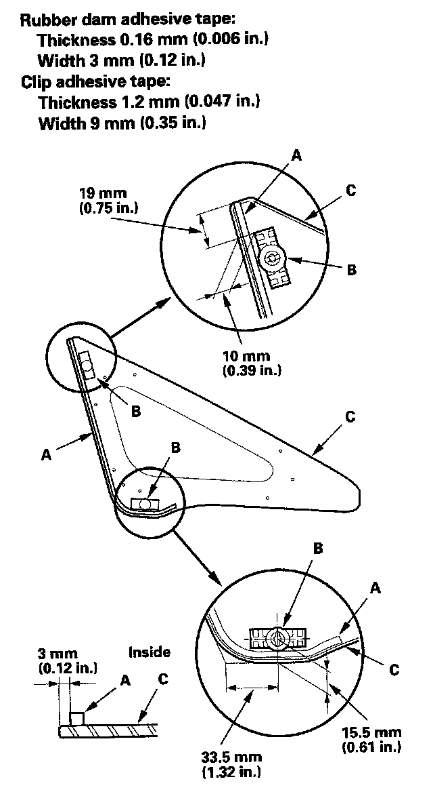
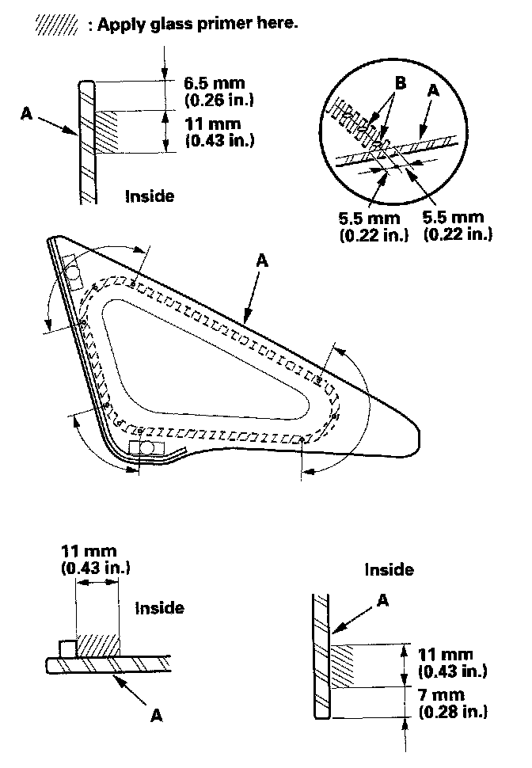
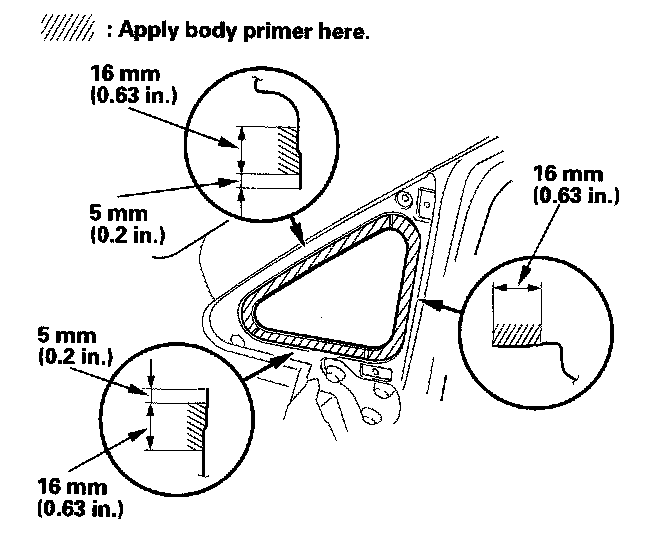
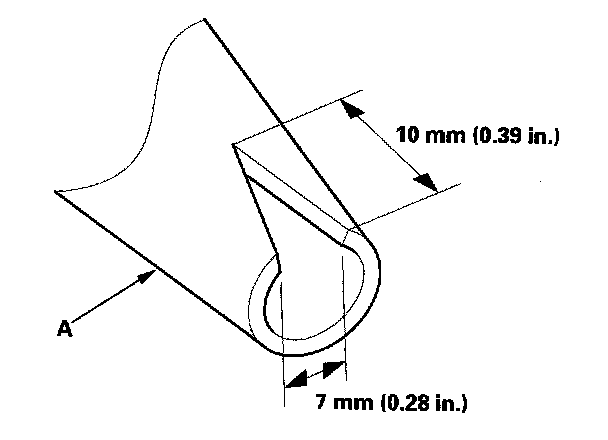
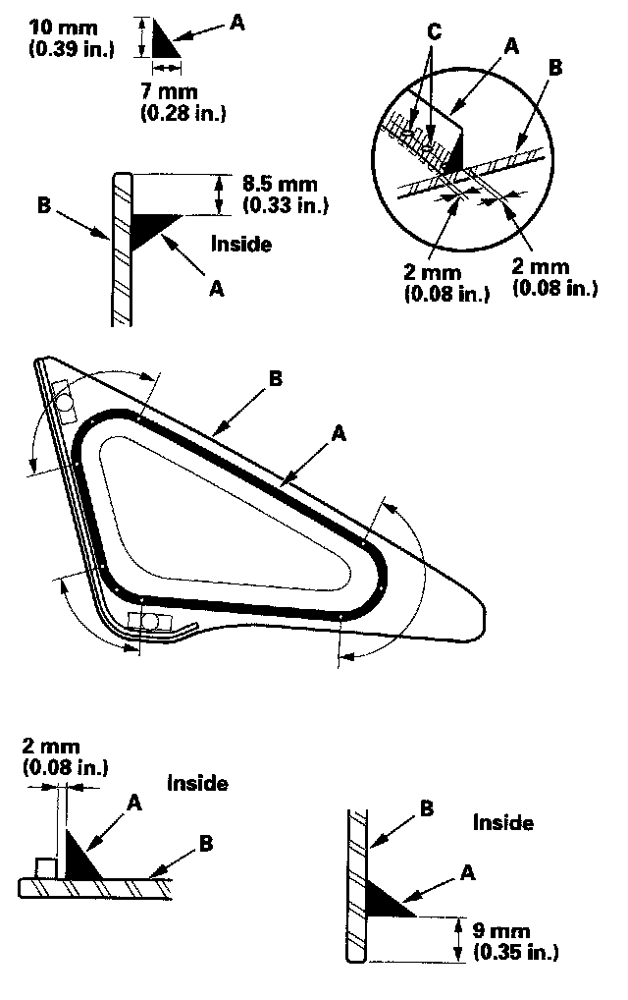
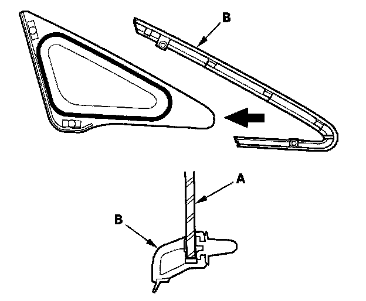
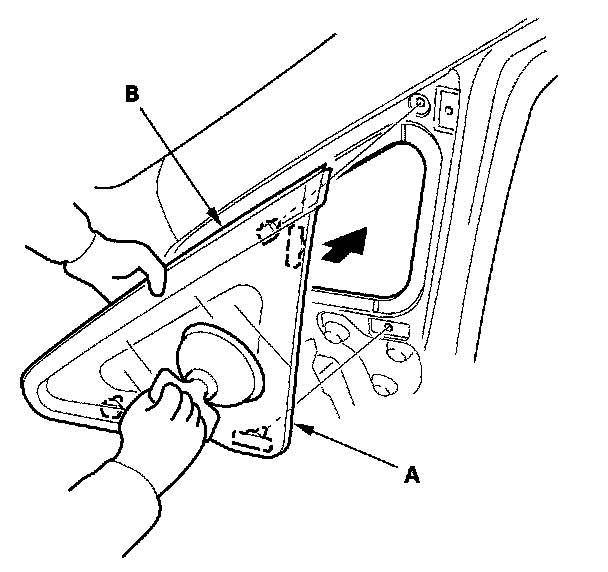

Front Corner Window Glass: Service and Repair
Front Corner Glass Replacement4-door
NOTE:
- Put on gloves to protect your hands.
- Wear eye protection while cutting the glass adhesive.
- Use seat covers to avoid damaging any surface.
1. Remove the A-pillar trim.

2. From inside the vehicle, use a knife (A) to cut through the front corner glass adhesive (B) all the way around. Apply protective tape along the edge of the entire front corner glass opening flange.

3. From outside the vehicle, pry the front corner glass clips (A) and the front corner trim clips (B), then carefully remove the glass (C) and trim (D) together. The trim has not be attached to the glass.
4. With a putty knife, scrape the old adhesive smooth to a thickness of about 2 mm (0.08 in.) on the bonding surface around the entire front corner glass opening flange:
- Do not scrape down to the painted surface of the body; damaged paint will interfere with proper bonding.
- If any of the clips are broken, remove them from the body.
5. Clean the body bonding surface with a sponge dampened in alcohol. After cleaning, keep oil, grease, and water from getting on the surface.
6. If the old front corner glass will be reinstalled, use a putty knife to scrape off the old adhesive from the front corner glass. Clean the inside face of the front corner glass and the edge of the glass with alcohol where new adhesive will be applied. Make sure the bonding surface is kept free of water, oil, and grease.

7. Attach the rubber dam (A) and clips (B) with adhesive tape to the inside face of the front corner glass (C) as shown. Be careful not to touch the front corner glass where adhesive will be applied.

8. With a sponge, apply a light coat of glass primer to the inside face of the front corner glass (A) as shown, then lightly wipe it off with gauze or cheesecloth:
- With the printed dots (B) on the front corner glass as a guide, apply the glass primer to both lower corner portions of the front corner glass.
- Do not apply body primer to the front corner glass, and do not get body and glass primer sponges mixed up.
- Never touch the primed surfaces with your hands. If you do the adhesive may not bond to the front corner glass properly, causing a leak after the front corner glass is installed.
- Keep water, dust, and abrasive materials away from primed surface.

9. With a sponge, apply a light coat of body primer to the original adhesive remaining around the front corner glass opening flange. Let the body primer dry for at least 10 minutes:
- Do not apply glass primer to the body, and be careful not to mix up glass and body primer sponges.
- Never touch the primed surfaces with your hands.
- Mask off the dashboard before painting the flange.

10. Before filling a cartridge, cut a "V", in the end of the nozzle (A) as shown.

11. Pack adhesive into the cartridge without air pockets to ensure continuous delivery. Put the cartridge in a caulking gun, and run a bead of adhesive (A) around the front corner glass (B) as shown:
- With the printed dots (C) on the front corner glass as a guide, apply the adhesive to both side portions of the front corner glass.
- Apply the adhesive within 30 minutes after applying the glass primer. Make a slightly thicker bead at each corner.

12. Set the front corner glass (A) to the front corner trim (B) quickly. Be careful not to touch the front corner glass where adhesive will be spread.
NOTE: Make sure that there is no clearance between the sash and front lower sash.

13. Use a suction cup to hold the front corner glass (A) over the opening while holding the front corner trim (B) by the other hand, align the clips, and set it down on the adhesive. Lightly push on the front corner glass until its edges are fully seated on the adhesive all the way around.
NOTE: Do not open or close any of the doors for about an hour until the adhesive is dry.
14. Scrape or wipe the excess adhesive off with a putty knife or towel. To remove adhesive from a painted surface or the front corner glass, wipe with a soft shop towel dampened with alcohol.
15. After the adhesive has dried, spray water over the front corner glass and check for leaks. Mark the leaking areas, let the front corner glass dry, then seal with sealant. Let the vehicle stand for at least 4 hours after front corner glass installation. If the vehicle has to be used within the first 4 hours, it must be driven slowly.
16. Reinstall all remaining removed parts.
NOTE: Advise the customer not to do the following things for 2 to 3 days:
- Slam the doors with all the windows rolled up.
- Twist the body excessively (such as when going in and out of driveways at an angle or driving over rough, uneven roads).